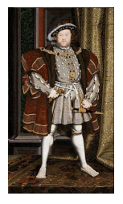

A EUROPA MODERNA: O PODER DAS MONARQUIAS NACIONAIS, CULTURA E RELIGIÃO NUM MUNDO EM TRANSFORMAÇÃO.
A Idade Moderna foi um período histórico de grandes transformações na Europa, mas também nos diverso outros continentes. Os marcos históricos que delimitam esse período são, a queda do Império Bizantino, em 1453 como o seu início, e a Revolução Francesa, em 1789 como o seu término. Ao longo da leitura do capítulo, busque responder as seguintes questões: Como se desenvolveu o processo da centralização do poder nas mãos dos reis e quem foram os principais teóricos do absolutismo? O que foi o Renascimento, quais as suas principais características e abrangência? Identifique os principais nomes do movimento renascentista na Europa. Qual o contexto com que se desenvolve o movimento da Reforma e quais foram as principais lideranças nela envolvidas?
Contextualizando
O início da modernidade vem marcado pela afirmação dos valores relativos ao fortalecimento do poder monárquico fato este que se processou através da centralização das funções e do exercício de um poder absoluto dos reis, capazes então de submeter à nobreza feudal que dominava o cenário local ao qual estavam seus domínios territoriais estabelecidos.
Assista ao Vídeo e anote em seu material as informações mais relevantes:
CONSTRUINDO CONHECIMENTOS
No desenrolar do processo de centralização do poder monárquico, a burguesia em franca ascensão econômica passou a estreitar seus laços com a monarquia. Esta, por seu turno, precisava do apoio dos burgueses para levar a efeito a implementação do regime absolutista. A centralização do poder é uma característica fundamental para entender o absolutismo.
Outro artifício utilizado pelos defensores do absolutismo foi recorrerem a justificativas de natureza religiosa para justificar a concentração dos poderes nas mãos dos reis, trata-se do que passou a ser chamado do “direito divino dos reis”, ou seja, a justificativa do poder como uma vontade de Deus.
Entre os intelectuais que desenvolveram estudos sobre o regime absolutista estão Nicolau Maquiavel e Thomas Hobbes. Segundo estes pensadores o rei deveria fortalecer o Estado fazendo uso do que fosse necessário para atingir os seus objetivos.
Hobbes escreveu o livro “O Leviatã", onde defendia que o Estado serve como instituição mediadora dos conflitos entre os homens, organizando-se em torno do que chamou de um contrato social que limitasse os direitos dos indivíduos em nome da sociedade.
Já o teórico Nicolau Maquiavel, que escreveu o livro “O Príncipe", preconizava o uso da autoridade absoluta dos governantes como forma legítima de ação para que fossem alcançados os fins por ele desejados. Para ele o uso da violência era algo lícito na busca de se chegar aos objetivos previamente estipulados. Considerava que o soberano deveria ser em primeiro lugar temido, pois assim manteria a ordem no Estado. Maquiavel e os seus seguidores acreditavam que no governo “Os fins justificam os meios”.
Exemplos de alguns reis deste período:
- Henrique VIII - Dinastia Tudor - governou a Inglaterra no século XVII
- Elizabeth I - Dinastia Stuart - rainha da Inglaterra no século XVII
- Luís XIV - Dinastia Bourbon - conhecido como Rei Sol - governou a França entre
- 1643 e 1715.
- Fernando e Isabel - governaram a Espanha no século XVI.
O RENASCIMENTO
Teve suas origens ainda no medievo, tratando-se de um movimento de caráter cultural variado, que demarca uma guinada na concepção de mundo e nos valores que perduraram ao longo da Idade Média para algo completamente diferente, atendendo aos anseios da burguesia emergente daquele período.
Para ajuda-lo a contextualizar o período do renascimento, assista o vídeo a seguir:
A Itália foi o local de maior destaque na difusão dos ideais renascentistas, e isto em todos os aspectos, sendo nas artes na literatura, a demonstração mais evidente desta transformação que se estendeu ainda nos campos da política, da religião, da literatura, entre outros.
Características do renascimento: Valorização dos padrões artísticos da idade clássica, valorização do humano (antropocentrismo, naturalismo e humanismo), da razão (como um dom dado por Deus), sentimento religioso (importante não atribuir aos renascentistas uma visão antirreligiosa),
Neste período a figura do mecenas, pessoas que eram patrocinadoras dos artistas e intelectuais, teve grande importância no desenvolvida desta nova cultura. Fizeram parte do mecenato importantes homens de negócios, banqueiros, mercadores, reis, políticos e até mesmo figuras da igreja.
Estas transformações disseminaram-se no âmbito político, através da centralização do poder real e das alianças estabelecidas entre os reis e a classe burguesa que cada vez mais consolidava seu poderio econômico.
Contudo, o Renascimento não teve o mesmo desenvolvimento em todos os locais da Europa. A rica burguesia das cidades italianas, como é o caso de Florença, proporcionou um grande desenvolvimento ao movimento, patrocinando artistas e intelectuais diversos, fazendo da Itália o grande centro irradiador dos ideais renascentista para outros importantes centros culturais como a região de Flandres e a Alemanha.
O vídeo abaixo apresenta algumas das características mais relevantes do renascimento, como o individualismo. Assista e perceba como o individualismo está presente no contexto da sociedade durante o período.
Usando uma ferramenta de busca na internet, pesquise obras dos artistas listados abaixo bem como breves biografias dos mesmos buscando relacionar os conceitos desenvolvidos até aqui, com a vida e a obra desses personagens:
Leonardo da Vinci (1452-1519), Sandro Botticelli (1445-1510), Michelangelo Buonarroti (1475-1564), Rafael Sanzio (1483-1520), Donatello (1386- 1466).
VOCÊ SABIA?
O Museu de Arte de São Paulo possui algumas obras que são do período renascentista, como “São Jerônimo Penitente no Deserto” (1448-1451) de Andrea Mantegna.
REFORMA PROTESTANTE
LUTERANISMO
O monge agostiniano Martinho Lutero, foi um dos mais importantes nomes da Reforma Protestante. Ele criticou o comércio de indulgências praticado pela Igreja Católica que vendia o perdão aos seus fiéis, pois acreditava que a salvação só poderia ser alcançada através da fé em Cristo.
No dia 31 de outubro de 1517 expôs na porta da Igreja da cidade Wittemberg as suas 95 teses contrárias a este tipo de prática. Tal fato fez com que Lutrero fosse acusado de heresia pelos líderes religiosos católicos e, após recusar-se a fazer a sua retratação, foi efetivamente excomungado pelo Papa Leão X, assim como aconteceu com todos os seguidores das suas ideias.
Cena do filme sobre a vida de Martinho Lutero
CALVINISMO
João Calvino (1509-1564) foi outro nome importante da Reforma religiosa que teve curso no século XVI, dando origem da doutrina conhecida como calvinismo. O calvinismo é o resultado da dissidência religiosa que se processou a partir da cidade Suíça de Genebra e rapidamente disseminou-se pelos territórios de língua francesa, os calvinistas também romperam com a Igreja Católica, pois tinham entre outras crenças a ideia da predestinação oriunda da vontade de Deus. Esta crença poderia ser verificada através de uma vida materialmente
http://pt.infobiografias.com/biografia/14868/Juan-Calvino.htm
ANGLICANISMO
 Já na Inglaterra a Reforma protestante ocorreu através da figura do rei Henrique VIII (1491-1547), que entrou para a história como tendo sido o responsável pela ruptura com a Igreja Católica, dando início a um novo credo que viria a se tornar conhecido como o anglicanismo. Ele opôs-se à autoridade do papa e deu curso a uma série de ações que visavam o enfraquecimento do poder religioso católico em seu reino, fato este que resultou na sua excomunhão. Neste processo, Henrique VIII passou a dissolver os mosteiros que abrigavam os clérigos, tomando posse das propriedades da Igreja e colocando-se como o grande líder da Igreja anglicana.
https://gr.pinterest.com/explore/acta-de-matrimonio
Tendo por base o texto acima, faça um estudo a respeito dos hábitos das cortes europeias na época do absolutismo monárquico. Busque elementos a respeito da vida cotidiana, dos alimentos, das roupas, das festividades, das relações sociais. A partir das informações coletadas, busque identificar semelhanças e diferenças em relação a sociedade atual.
Reveja os vídeos sobre reforma religiosa e elenque, comparando-os com o que você leu ao longo do capítulo, as principais motivações do movimento reformista ao propor a separação com o catolicismo.
O QUE APRENDI
Neste capítulo você aprendeu que durante o período histórico conhecido como Idade Moderna, tomaram curso grandes transformações na Europa, e que estas mudanças no cenário político, econômico, social e cultural no cenário europeu acabaram por repercutir nos outros continentes. Os marcos históricos que delimitam esse período são, a queda do Império Bizantino, em 1453 como o seu início, e a Revolução Francesa, em 1789 como o seu término. Vimos como se desenvolveu o processo da centralização do poder nas mãos dos reis e quem foram os principais teóricos do absolutismo. Estudou-se o Renascimento, as suas principais características e abrangência, identificando os principais nomes do movimento renascentista na Europa. Também conhecemos o contexto com que se desenvolveu o movimento da Reforma e quais foram as principais lideranças nela envolvidas.